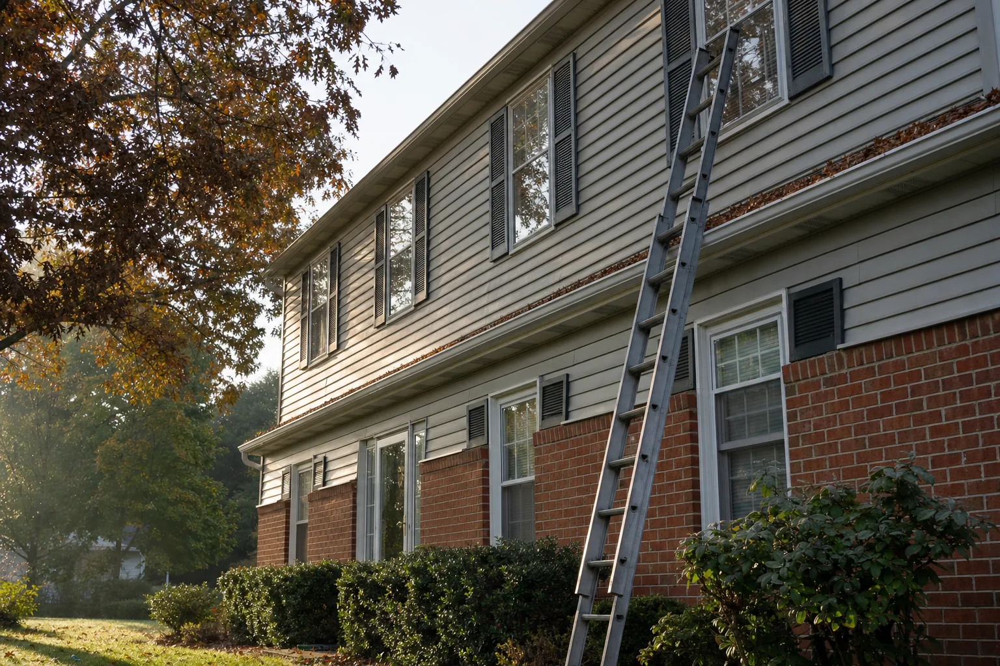
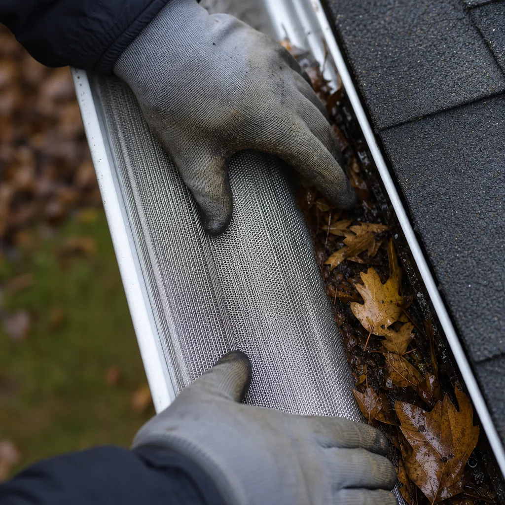
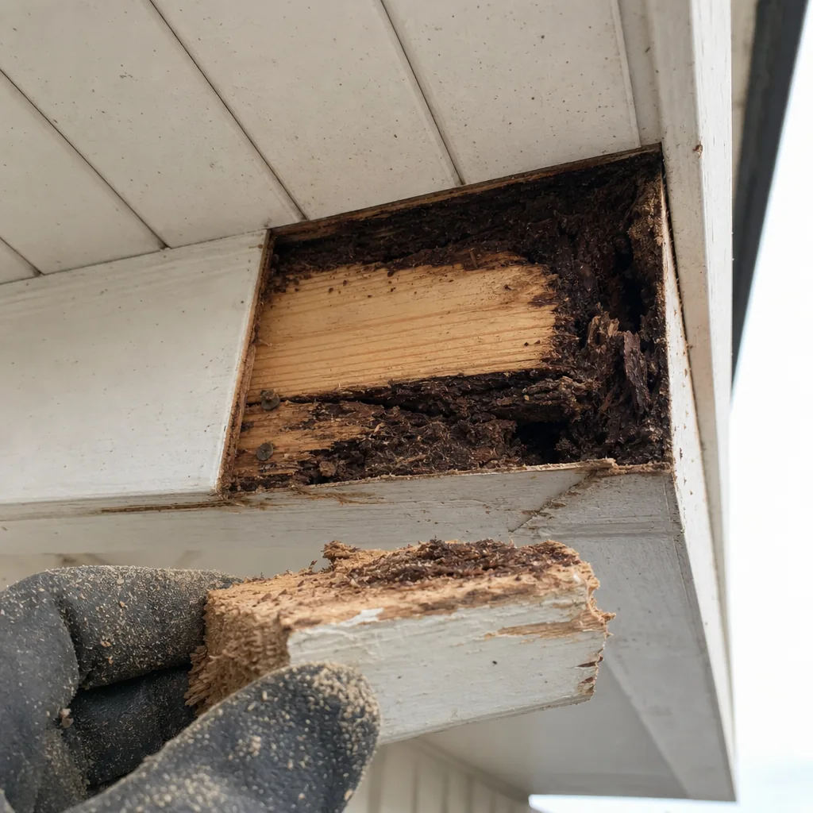
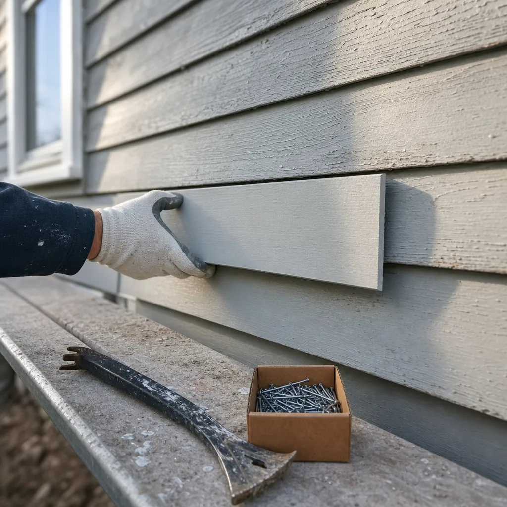

Ladder work is my specialty.
Gutters, flashing, siding, roof repairs and wood rot. Twenty-two years on the outside of houses in Prince William County. One man, and he answers his own phone.
What's broken?
How high does he go?
All the way. Most of these repairs are only expensive because they are awkward to reach, and reaching them is the part he is best at.
Shingle replacement, storm damage, louvered roof vent installation.
28 ftGutter cleaning and repair, micro-mesh guards, fascia and soffit.
18 ftStep flashing, counter flashing, the leak nobody can find.
14 ftClapboard and vinyl siding repair, wood rot cut out and replaced.
9 ftDownspouts, extensions and splash blocks, so it drains away from the house.
0 ftRecent work



There are around a hundred and ten more of these, taken on the job over twenty-two years. On a finished site they would all live here, sorted by what broke.
What people say
"We call him Super Mario for a reason! Since we purchased our townhouse in Arlington last August, Mario has been a regular fixture in our home."
Ryan W. · Yelp · 22 Jul 2021
"He did an amazing job, he reinstalled some siding. Went above and beyond to match the color. His heart is in the task at hand."
Zane S. · Yelp · 13 Oct 2024
"Mario has fixed dry wall holes, resloped our gutters, and recaulked our bathroom. He is on time, polite, friendly, efficient, honest."
Leslie G. · Yelp · 22 Sep 2020
Send a picture of it.
Text a photo of whatever is wrong and roughly where it is on the house, and you'll get a straight answer about whether it's a repair or something bigger. If it's bigger, he'll say so.
703-415-6623Bristow · Linton Hall · Gainesville · Manassas
· Arlington · Alexandria
Based in Bristow, VA 20136.
| Monday | 10:00 – 16:00 |
|---|---|
| Tuesday | 10:00 – 16:00 |
| Wednesday | 10:00 – 16:00 |
| Thursday | 10:00 – 16:00 |
| Friday | 10:00 – 16:00 |
| Saturday | Closed |
| Sunday | Closed |